The Jimny in ParaView: pressure, separation and wake
The run of Tutorial 3.2, seen: velocity on the centre plane, the regions where the flow reverses, the pressure coefficient on the body, the pressure drag recovered by integrating it, the wake and the streamlines, with ParaView 5.11.
OpenFOAM · Flujo incompresible · Tutorial 3.4
El Jimny en ParaView: presión, desprendimiento y estela
La corrida del tutorial 3.2, vista: la velocidad en el plano medio, dónde se invierte el flujo, el coeficiente de presión sobre la carrocería, el arrastre de presión recuperado integrándolo, la estela y las líneas de corriente, con ParaView 5.11.
OpenFOAM · Inkompressible Strömung · Tutorial 3.4
Der Jimny in ParaView: Druck, Ablösung und Nachlauf
Die Rechnung aus Tutorial 3.2, sichtbar gemacht: die Geschwindigkeit in der Mittelebene, wo die Strömung umkehrt, der Druckbeiwert auf der Karosserie, der Druckwiderstand durch Integration, der Nachlauf und die Stromlinien, mit ParaView 5.11.
Estimated reading: 45 minLectura estimada: 45 minLesedauer: ca. 45 minLevel: undergraduateNivel: licenciaturaNiveau: BachelorVerified on OpenFOAM 12 (blueCFD-Core 2024) and ParaView 5.11.2Verificado en OpenFOAM 12 (blueCFD-Core 2024) y ParaView 5.11.2Geprüft mit OpenFOAM 12 (blueCFD-Core 2024) und ParaView 5.11.2
Full English translation in preparation. Each section below carries a summary of its content; the complete text, figures and tables are available in the Spanish version, which the ES button above selects.
See the flow around a vehicle in ParaView and tie what you see to the numbers of Tutorial 3.3: the centre plane, the reversed-flow regions, the pressure coefficient, the pressure drag integrated over the body, the wake and the streamlines.
The problem
What the drag coefficient does not say
Tutorial 3.3 gave a drag coefficient of 0.564 and said it is almost all pressure. Where does that pressure come from, where does the flow separate, and how long is the wake?
The theory
Pressure coefficient, separation and total pressure
The pressure coefficient and its reference (p = 0 at the outlet, so the free stream upstream is Cp = 0.023); the pressure drag as the integral of Cp·n_x; separation and reversed flow; the total-pressure coefficient Cp0 and why the wake is the region where Cp0 < 0, while moving walls can raise it above the free stream.
Step by step
Nine filters, two readers
paraFoam; a Slice at y = 0 coloured by U and by Ux with a fixed range; a second reader with only the vehicle surface; a Calculator with Cp on cell data; Extract Surface, Generate Surface Normals, a Calculator with Cp·n_x and Integrate Variables; a Calculator with Cp0 and a Contour at zero; a Stream Tracer.
Worked example
What the Jimny shows
The hood bubble starts at the leading edge (x = 0.15 m) and grows to 26 cm before the windshield; the rear recirculation reaches 2.0 m behind the vehicle; the integrated pressure drag is 0.5618 against 0.5615 from foamPostProcess; the wake is the zero total-pressure surface.
Common errors
What goes wrong in ParaView
Integrating point data instead of cell data (0.5532 instead of 0.5618); a colour range that grows on its own; the automatic range that hides everything in one colour.
Suggested exercise
The Jimny at 120 km/h, seen
Repeat the views on the 120 km/h case and compare the hood bubble, the recirculation and the integrated pressure drag.
Sources
References
Hucho on road-vehicle aerodynamics; the ParaView user's guide; the OpenFOAM user guide.
Objetivos de aprendizaje
Qué se debe poder hacer al terminar
El tutorial 3.3 dio el coeficiente de arrastre del Jimny, \(C_D\) = 0.564, y encontró que el 99 % es de presión. Esta guía lo hace visible: dónde empuja el aire, dónde se despega, cuánto mide la estela. Y lo comprueba: el arrastre de presión se vuelve a calcular dentro de ParaView, integrando lo que se ve.
Cortar el campo por el plano medio y leer en él la velocidad y las zonas de flujo invertido, con un rango de color elegido a propósito.
Abrir el mismo caso dos veces —el aire y la superficie del vehículo— y calcular el coeficiente de presión con un Calculator.
Integrar el coeficiente de presión sobre la carrocería con Integrate Variables y recuperar el arrastre de presión del 3.3.
Dibujar la estela como la superficie de presión total cero y las líneas de corriente alrededor del vehículo.
Qué hace falta. El caso del 3.2 terminado y reconstruido (la carpeta 2000 en $FOAM_RUN/jimny) y ParaView 5.11, que se abre con paraFoam. Conviene haber hecho los posprocesamientos del 2.3 y del 1.3: aquí se dan por sabidos Apply, el ojo de cada filtro y el rango de colores.
El problema
Lo que el Cd no dice
Un coeficiente resume el flujo en un número, y deja fuera todo lo demás. Dos vehículos con el mismo \(C_D\) pueden tener el arrastre en lugares muy distintos, y para cambiarlo hay que saber dónde está. Las preguntas de esta guía son las que se hace un ingeniero al abrir los resultados:
¿Dónde empuja el aire, y dónde succiona?
¿Dónde se despega del vehículo, y qué tan grandes son esas zonas?
¿Qué tan larga es la estela?
¿Cuadra lo que se ve con el número del 3.3?
La teoría
Coeficiente de presión, desprendimiento y presión total
El coeficiente de presión y su referencia
El coeficiente de presión compara la presión de cada punto con la del aire libre, en unidades de la presión dinámica:
El solver incompresible trabaja con la presión dividida entre la densidad, y el caso pone p = 0 en la salida del túnel. Tomando esa presión como referencia, \(C_p = p/(\tfrac12 U_\infty^2) = p/385.8642\). Pero delante del vehículo la presión del aire libre no es exactamente cero: el túnel pierde un poco de presión de la entrada a la salida, y en la entrada \(C_p\) = 0.023. Por eso el \(C_p\) de remanso, donde el aire se detiene, no es 1 sino 1 + 0.023. Para las fuerzas da igual: una presión constante sobre una superficie cerrada no empuja en ninguna dirección.
\(C_{p0}\) es el coeficiente de presión total: la presión más la presión dinámica. Fuera de la capa límite y de la estela el aire no pierde energía y \(C_{p0}\) vale lo mismo que en la entrada, 1.023 (es la ecuación de Bernoulli). Dentro de ellas la viscosidad y la turbulencia se comen parte de esa energía y \(C_{p0}\) baja. La superficie \(C_{p0} = 0\), donde el aire perdió toda su presión dinámica de llegada, es la forma habitual de dibujar la estela de un vehículo (Hucho, 1998).
Hay un caso en que \(C_{p0}\) sube en lugar de bajar: junto a una pared que se mueve. Las llantas giran, y en su parte de arriba la superficie va hacia adelante, contra el viento; el suelo se mueve con el aire. Esas paredes le dan energía al aire que las toca: junto a la rueda delantera, \(C_{p0}\) llega a 1.81.
El arrastre de presión como integral
La presión empuja cada cara de la carrocería en la dirección de su normal. Sumando sobre toda la superficie, la componente en x de esa fuerza es el arrastre de presión; en coeficiente,
\[ C_{D,p} = \frac{1}{A}\oint C_p\, n_x\, dA \tag{2} \]
con \(\mathbf n\) la normal de cada cara que apunta fuera del aire, hacia dentro del vehículo (la orientación que les da OpenFOAM a las caras de frontera): en el frente, \(n_x\) es positiva y una presión positiva empuja hacia atrás. ParaView puede calcular las normales de cada cara, multiplicar y sumar: es lo que hace la receta, y debe dar el arrastre de presión de foamPostProcess.
Desprendimiento y flujo invertido
Donde la superficie cambia bruscamente de dirección —un borde vivo—, la capa límite no alcanza a seguirla y se despega. Detrás queda una zona donde el aire se mueve lento y en remolino, y parte de él va hacia adelante, contra la corriente: \(U_x < 0\). Colorear un corte por \(U_x\), con un rango que ponga el cero en el centro de la escala, deja ver esas zonas de un vistazo. El Jimny, con su frente plano y su cola recta, tiene varias.
Paso a paso
Nueve filtros, dos lectores
En la terminal de blueCFD-Core, dentro del caso, paraFoam abre ParaView con un lector del caso, jimny.foam. Todo lo demás es en ParaView, en el orden de la tabla 1.
Filtro
Sobre
Lo que se le pone
Para qué
Slice
lector del aire
Y Normal (el plano y = 0)
el plano medio: velocidad y flujo invertido
Calculator
lector del vehículo
Cell Data; Cp = p/385.8642
el coeficiente de presión sobre la carrocería
Extract Surface
Calculator del Cp
—
deja la superficie como polígonos, lo que pide el siguiente
Generate Surface Normals
Extract Surface
Compute Cell Normals
la normal de cada cara: Normals
Calculator
las normales
Cell Data; CpNx = Cp*Normals_X
lo que se integra para el arrastre de presión
Integrate Variables
ese Calculator
—
\(\int C_p n_x\,dA\) y el área, en una hoja
Calculator
lector del aire
Cp0 = (p+0.5*mag(U)^2)/385.8642
el coeficiente de presión total
Contour
ese Calculator
Cp0 = 0; opacidad 0.5
la estela
Stream Tracer
lector del aire
una recta de semillas delante del vehículo, 60 puntos
las líneas de corriente
Tabla 1.El árbol de filtros de esta guía. En el orden en que se crean. Los dos lectores son el mismo archivo jimny.foam: el primero con la malla del aire (internalMesh), el segundo sólo con la superficie del vehículo (group/jimnyGroup).
El lector del aire: Apply (lee la malla completa, 2.1 millones de celdas: unos segundos) y la última iteración con Last Frame.
El plano medio: Slice con Y Normal (el origen ya está en y = 0, el centro del túnel), Apply, colorear por U y fijar el rango de 0 a 36 con Rescale to Custom Data Range ▸ Rescale and disable automatic rescaling. Se mira de lado con Adjust Camera (la vertical, z).
El flujo invertido: el mismo corte coloreado por U ▸ X, con el rango de −10 a 10. Acercar la cámara al cofre y a la cola.
El lector del vehículo: File ▸ Open, jimny.foam otra vez; en Mesh Regions, sólo group/jimnyGroup; Apply.
El Cp: Calculator con Attribute TypeCell Data, nombre Cp y expresión p/385.8642; colorear por Cp con el rango de −1 a 1.
El arrastre de presión, sobre ese Calculator: Extract Surface; Generate Surface Normals con Compute Cell Normals; otro Calculator en Cell Data con CpNx = Cp*Normals_X; Integrate Variables. En la hoja de cálculo que abre, Attribute en Cell Data: \(C_{D,p}\) = CpNx/2.435. Luego se cierra la hoja y se borran estos cuatro filtros, que ya no hacen falta.
La estela, sobre el lector del aire: Calculator (en Point Data) con Cp0 = (p+0.5*mag(U)^2)/385.8642; Contour por Cp0 con el valor 0; en el panel, Opacity 0.5. Se deja a la vista con el vehículo.
Las líneas de corriente, sobre el lector del aire: Stream Tracer con la recta de semillas de (−1, −0.9, 0.15) a (−1, 0.9, 1.9) y Resolution 60; sin Show Line; colorear por la magnitud de U.
Los filtros se crean con los botones de la barra de herramientas (Slice, Calculator, Contour, Stream Tracer) o, los que no están en ella, con Ctrl+Espacio y su nombre.
Ejemplo resuelto
Lo que enseña el Jimny
Las imágenes son del vídeo de esta guía; las cifras, de la misma corrida leída con ParaView sin ventana.
1. La velocidad en el plano medio
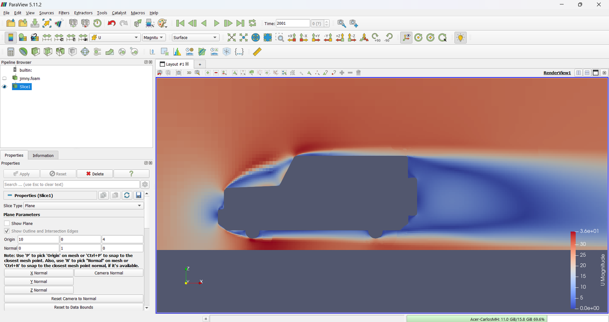
Figura 1.La velocidad en el plano medio.Slice por y = 0, coloreado por la magnitud de U con el rango fijo de 0 a 36 m/s. El aire se frena delante del frente (azul), se acelera sobre el borde del techo (rojo oscuro: hasta 36.5 m/s en el plano) y deja detrás una estela lenta, tan alta como el vehículo. El hueco es el Jimny; abajo, el suelo.
La figura 1 resume el flujo de un vehículo de caja: el aire se frena contra el frente, se acelera para pasar por encima —la velocidad más alta del plano, 36.5 m/s, un tercio más que la del aire libre— y deja detrás una estela lenta que ocupa toda la altura de la cola. Con el rango automático los mismos colores se verían pálidos: ParaView lo toma de toda la malla, y el máximo, 50 m/s, está junto a la cara de afuera de la rueda delantera, donde el aire se acelera alrededor de la llanta que gira.
2. Dónde se invierte el flujo
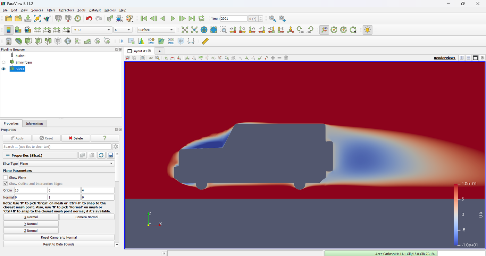
Figura 2.Dónde se invierte el flujo. El mismo corte coloreado por la componente x de U, con el rango de −10 a 10 m/s: el blanco es Ux = 0 y el azul, aire que va hacia adelante, contra la corriente. Se ven dos zonas: sobre el cofre, al pie del parabrisas, y detrás de la cola.
Coloreado por \(U_x\) con el cero en el centro de la escala (figura 2), el corte enseña las zonas de la tabla 2. Las dos grandes son la del cofre y la de la cola.
Zona
De x = … a x = …
Espesor
Qué es
sobre el cofre
0.15 a 1.30 m
hasta 26 cm, en x = 1.02 m
el aire se despega en el borde delantero del cofre y vuelve a pegarse en el parabrisas
en el borde del techo
1.45 a 1.60 m
7 mm
una burbuja muy delgada donde el parabrisas se junta con el techo
detrás de la cola
3.64 a 5.62 m
casi toda la altura de la cola
la recirculación: 2.0 m detrás del vehículo (0.55 veces su largo)
Tabla 2.Dónde se invierte el flujo, en el plano medio. Las zonas del plano y = 0 con \(U_x < 0\) (el aire va hacia adelante), medidas en la iteración 2000. El Jimny va de x = 0 a x = 3.64 m.
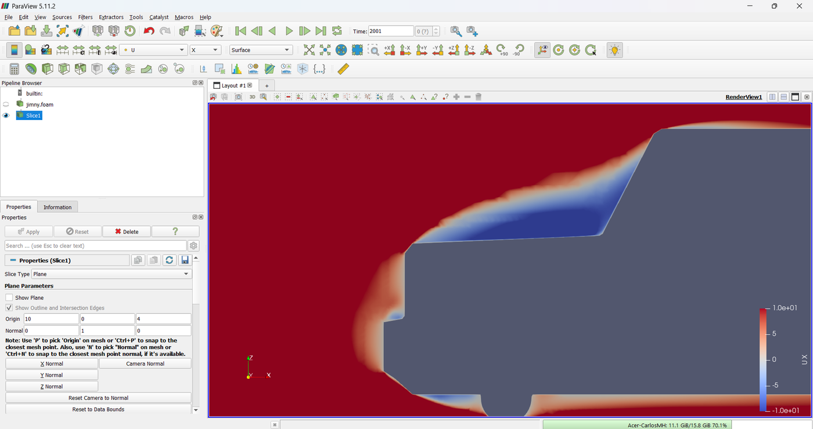
Figura 3.La burbuja del cofre, de cerca. El aire que sube por el frente plano no alcanza a doblar el borde del cofre: se despega ahí y deja sobre el cofre una cuña de flujo invertido (azul) que crece hacia el parabrisas, donde el aire vuelve a pegarse.
Sobre el cofre (figura 3), el aire que sube por el frente plano no alcanza a doblar el borde y se despega ahí. Queda una burbuja que la figura 4 mide tramo por tramo: empieza en el borde, x = 0.15 m, crece hasta 26 cm de espesor al llegar al parabrisas y se cierra sobre él, en x ≈ 1.30 m. En el borde del techo hay otra, pero de sólo 7 mm: la primera celda junto a la pared.
Figura 4.La burbuja del cofre, medida. En el plano medio, la altura de la superficie del Jimny (el cofre casi plano, a z ≈ 1.14 m, y el parabrisas inclinado) y la del borde de arriba del flujo invertido. La burbuja empieza en el borde delantero del cofre, x = 0.15 m, crece hasta 26 cm de espesor y se cierra en el parabrisas, en x ≈ 1.30 m. Datos de ParaView sin ventana, en tramos de 5 cm.
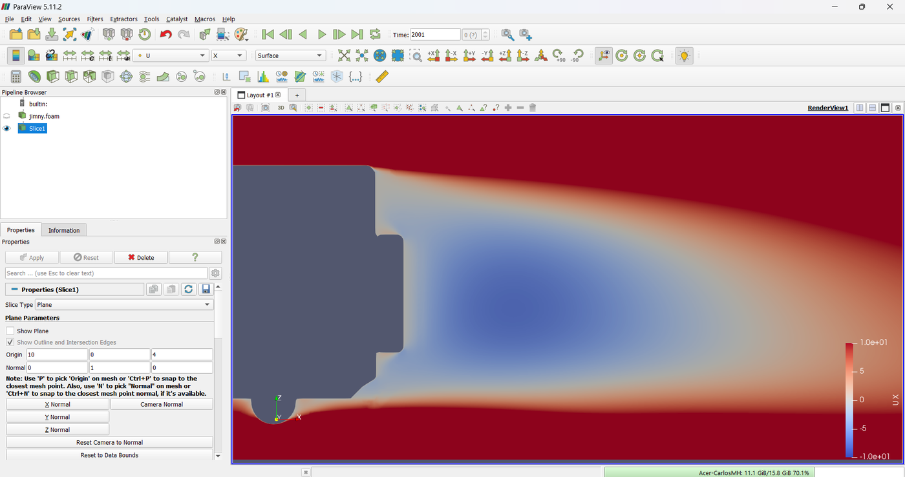
Figura 5.La recirculación detrás de la cola. Detrás de la puerta trasera, casi plana, el aire gira sobre sí mismo: una zona de flujo invertido (azul) que llega a x = 5.62 m, 2.0 m detrás del vehículo.
Detrás de la cola (figura 5), la puerta trasera casi plana deja una recirculación que llega a x = 5.62 m: 2.0 m detrás del vehículo, más de la mitad de su largo. Ahí la presión es baja y tira del Jimny hacia atrás.
3. La presión sobre la carrocería
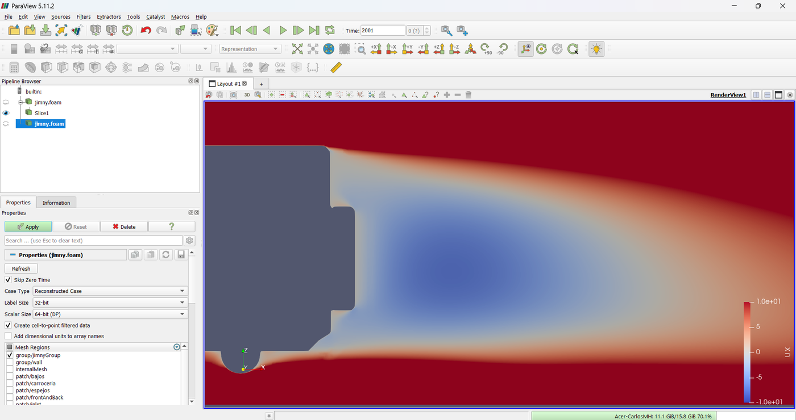
Figura 6.Un segundo lector, sólo con el vehículo. El mismo jimny.foam, abierto otra vez con File → Open. En Mesh Regions se deja sólo group/jimnyGroup: las seis regiones del Jimny, sin la malla del aire.
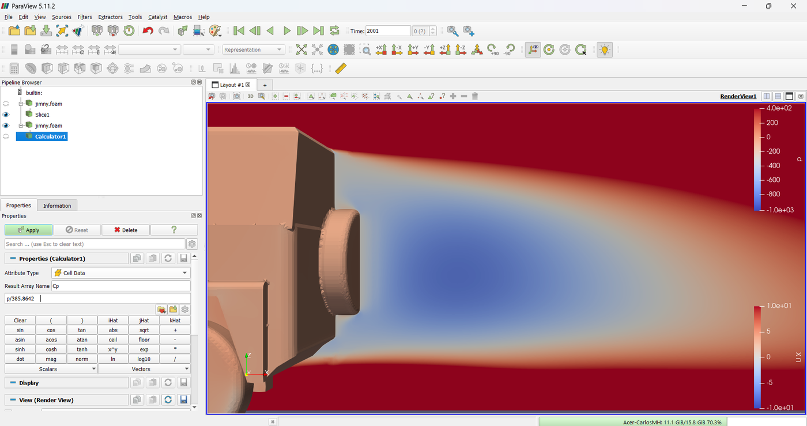
Figura 7.El Calculator del Cp.Attribute Type: Cell Data (el valor de cada cara, como lo calculó OpenFOAM); el nombre Cp y la expresión p/385.8642, que es p entre ½U∞².
El segundo lector (figura 6) trae sólo la superficie del vehículo. El Calculator (figura 7) trabaja con los valores de las caras, Cell Data: son los que calculó OpenFOAM; los de los puntos, la opción por omisión, son promedios de las caras vecinas.
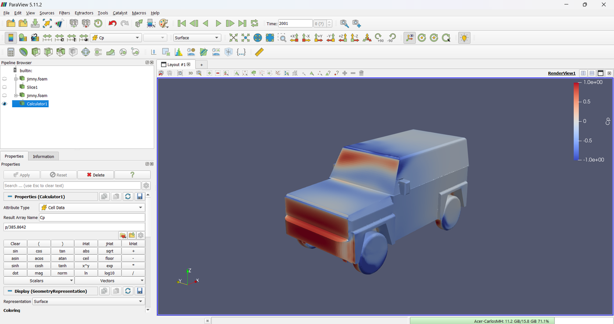
Figura 8.El coeficiente de presión sobre el Jimny. Con el rango fijo de −1 a 1. Rojo: presión mayor que la del aire libre, en el frente y en el parabrisas, donde el aire choca. Azul: succión, en los bordes donde el aire dobla, como el borde del cofre y el del techo. El resto de la carrocería, casi blanco, está cerca de Cp = 0.
La figura 8 es el arrastre de presión hecho visible. El frente y el parabrisas, en rojo, reciben el aire de frente: en el frente de la carrocería el \(C_p\) llega a 1.021, el remanso de la teoría (1 + 0.023). Los bordes, en azul, succionan: la succión más fuerte de la carrocería, \(C_p\) = −1.94, está en la esquina donde el parabrisas se junta con el techo y el costado. En las llantas, que giran, la succión llega a −2.82 y la presión, a 1.05 en una pieza de los bajos junto a la rueda delantera: más que el remanso, porque ahí la llanta le dio energía al aire.
4. El arrastre de presión, integrado
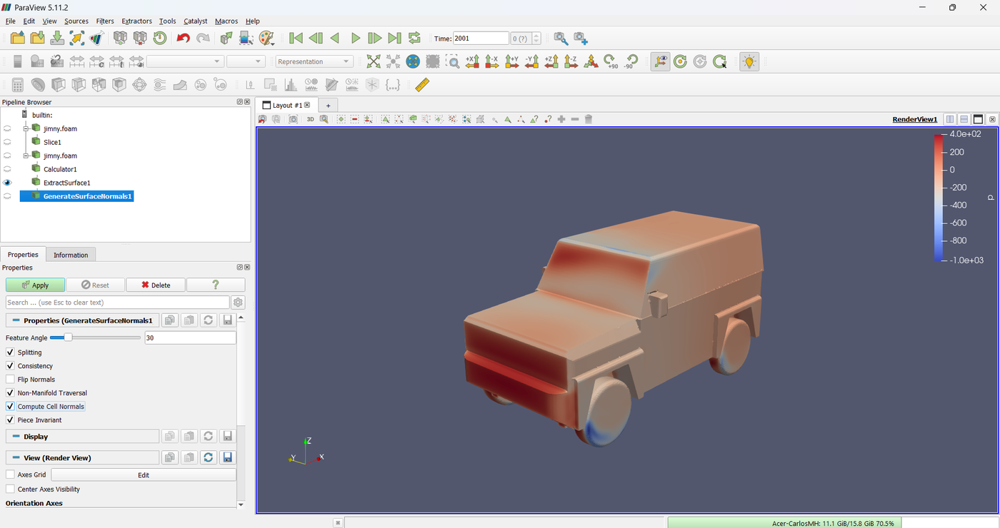
Figura 9.Generate Surface Normals. Sobre la superficie que deja Extract Surface, con Compute Cell Normals marcado: así cada cara recibe su normal, Normals, con la misma orientación que le da OpenFOAM.
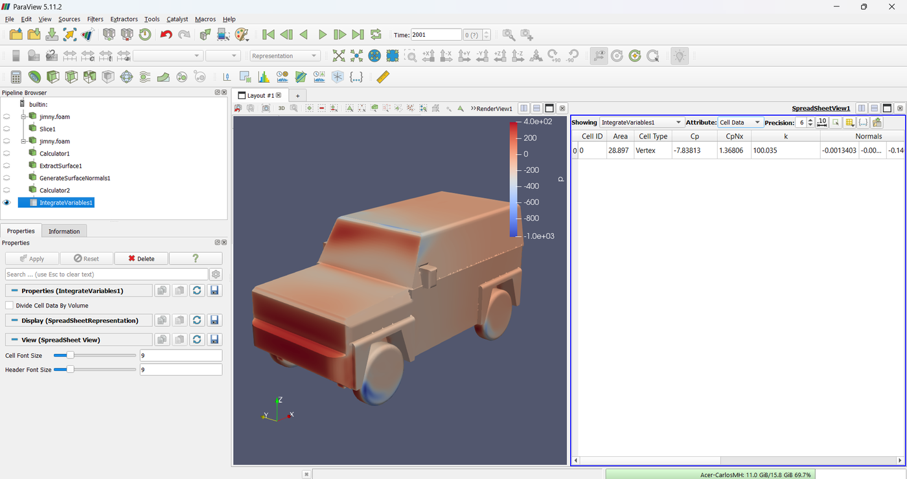
Figura 10.La integral, en la hoja de cálculo.Integrate Variables sobre CpNx, con Attribute en Cell Data: Area = 28.897 m² (la superficie del Jimny) y CpNx = 1.3681 m², que entre el área de referencia da \(C_{D,p}\) = 0.5618.
Integrate Variables (figura 10) suma cada columna por el área de su cara: Area es el área del Jimny, 28.90 m², y CpNx es la integral de la ecuación (2). Entre el área de referencia, 2.435 m²:
contra 0.5615 de foamPostProcess en el 3.3 (tabla 3). Lo que se ve en la figura 8 es, exactamente, el arrastre de presión del Jimny.
Cálculo
\(\int C_p n_x\, dA\) [m²]
\(C_{D,p}\)
Diferencia
ParaView, datos en las celdas
1.3681
0.5618
+0.06 %
ParaView, datos en los puntos
1.3470
0.5532
-1.5 %
foamPostProcess (tutorial 3.3)
1.3672
0.5615
—
Tabla 3.El arrastre de presión, de dos maneras. \(C_{D,p} = \int C_p\, n_x\, dA \,/\, A\) con A = 2.435 m². La de foamPostProcess es la parte de presión del tutorial 3.3 (633.05 N) entre ½ρU²A.
5. La estela
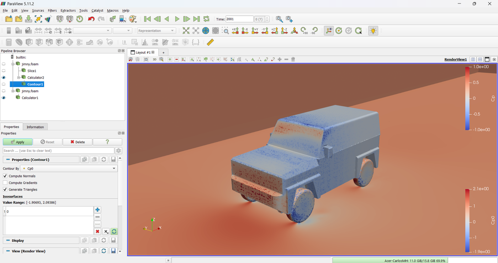
Figura 11.El Contour de la presión total. Sobre el Calculator con Cp0: Contour ByCp0 y un solo valor, 0.
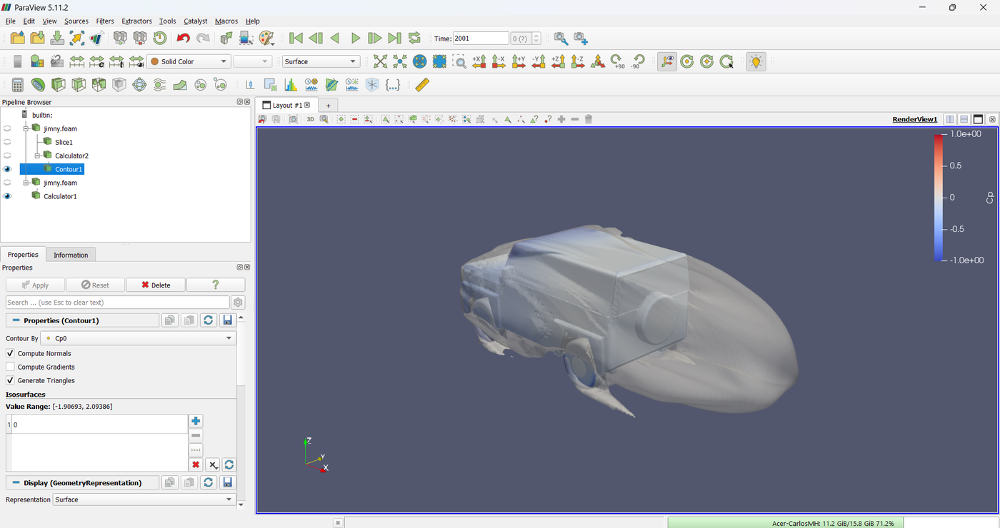
Figura 12.La estela: la superficie de presión total cero. Semitransparente, sobre el Jimny coloreado por Cp. Dentro de ella el aire perdió la presión total del aire libre: es la capa límite pegada a la carrocería y, detrás, la estela, que se cierra hacia x = 5.5 m.
La superficie \(C_{p0} = 0\) (figura 12) envuelve al Jimny —es la capa límite— y se cierra detrás de él hacia x = 5.5 m: casi donde termina la recirculación del plano medio, pero ahora en las tres dimensiones. Es la parte del aire que el vehículo frenó; su tamaño es una medida del arrastre.
6. Las líneas de corriente
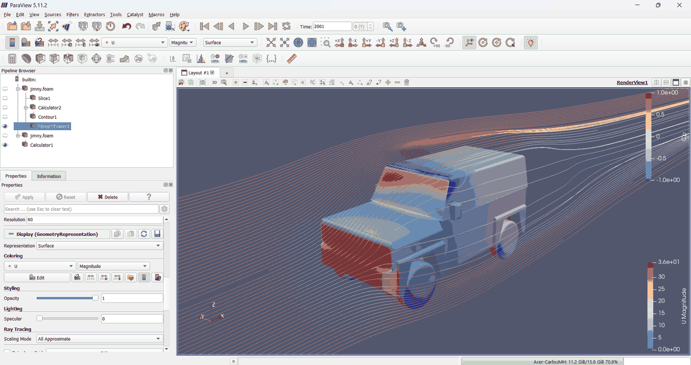
Figura 13.Las líneas de corriente, por delante. Sesenta semillas en una recta delante del Jimny, del suelo al techo, coloreadas por la velocidad: las de abajo pasan por los lados y por debajo, las de arriba suben sobre el cofre y el techo.
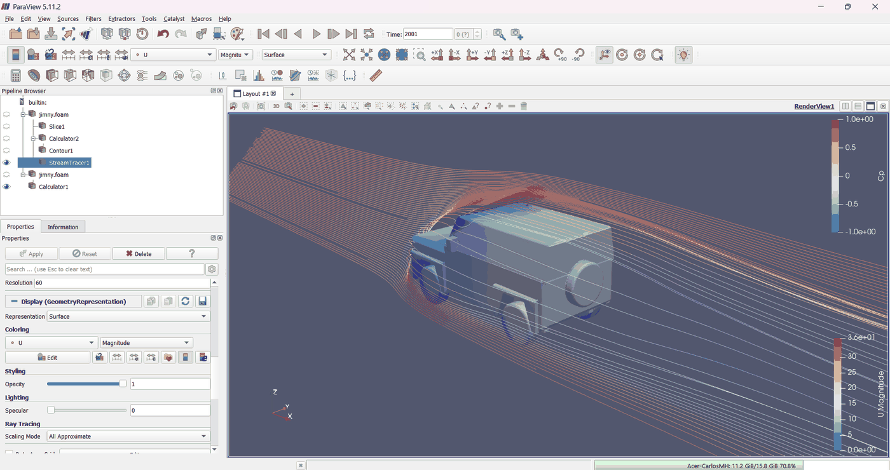
Figura 14.Las líneas de corriente, por detrás. Las líneas que pasan junto a la cola se enrollan en la estela, donde la velocidad es baja (azul).
Las líneas de corriente (figuras 13 y 14) siguen la velocidad desde las semillas: rodean el frente, se aceleran sobre el techo (rojo) y las que pasan junto a la cola se enrollan en la estela (azul). En un cálculo estacionario son también las trayectorias del aire.
Lo que enseña el Jimny: un frente que frena el aire y lo hace subir; una burbuja sobre el cofre que empieza en su borde y crece hasta 26 cm; una recirculación de 2.0 m detrás de la cola; y un arrastre de presión que, integrado en ParaView, da 0.5618, el mismo de foamPostProcess. Cuánto confiar en esos números es el tema del tutorial 3.6; antes, el 3.5 valida el método con un auto que sí se midió en un túnel de viento.
Errores frecuentes
Qué sale mal en ParaView
Los dos primeros se vieron al preparar esta guía; el tercero, en los posprocesamientos anteriores.
1. Integrar con los datos en los puntos
Si el Calculator del Cp se deja en Point Data (y las normales, en los puntos), la integral da \(C_{D,p}\) = 0.5532, un 1.5 % menos (tabla 3). Los valores en los puntos son promedios de las caras vecinas, y en los bordes vivos —justo donde la presión cambia más— el promedio mezcla caras que miran a lados distintos. Remedio: para integrar, Cell Data; los puntos sirven para dibujar.
2. Un rango de color que crece solo
Con Rescale en el cuadro del rango, ParaView vuelve a ajustar la escala cuando se aplica otro filtro que usa la misma variable: al terminar la receta, la escala del Cp había pasado de −1 a 1 a −2.8 a 1.1, y el Jimny se veía de un solo color. Remedio:Rescale and disable automatic rescaling, que fija el rango hasta que se vuelva a cambiar a mano.
3. El rango automático
El rango automático va del mínimo al máximo de lo que se colorea. Unos pocos valores extremos —los 50 m/s junto a la rueda delantera, la presión en el remanso— lo estiran, y lo interesante queda en un solo color (como la y⁺ del 3.3). Remedio: elegir el rango con la física: de 0 a algo más que \(U_\infty\) para la velocidad, simétrico alrededor de cero para \(U_x\), de −1 a 1 para \(C_p\).
Práctica sugerida
El Jimny a 120 km/h, visto
El Jimny a 120 km/h, visto: ¿cambia el flujo, o sólo su escala?
Enunciado. Con el caso a 120 km/h de las prácticas del 3.1 y del 3.3, repetir esta guía y llenar la tabla 4.
Condiciones. Los dos Calculator dividen entre \(\tfrac12 U_\infty^2\): a 120 km/h (33.33 m/s) es otro número. Los rangos de color se escalan con la velocidad.
El procedimiento, en corto
Calcular \(\tfrac12 U_\infty^2\) para 33.33 m/s y ponerlo en los dos Calculator.
Medir en el plano medio dónde termina la burbuja del cofre y la recirculación de la cola (el cursor de ParaView da las coordenadas de un punto con la tecla D o con Hover Points On).
Integrar el Cp como en el paso 6 y comparar con el 3.3 de ese caso.
Registro de resultados
Velocidad
Fin de la burbuja del cofre [m]
Espesor máximo [cm]
Fin de la recirculación [m]
\(C_{D,p}\) integrado
100 km/h
1.30
26
5.62
0.5618
120 km/h
Tabla 4.Registro de la práctica. Los renglones de 100 km/h son los de esta guía; los de 120 km/h se llenan con el caso de la práctica del 3.1.
Preguntas que orientan la lectura
¿Cambian de lugar la burbuja del cofre y la recirculación? ¿Por qué se esperaba que no cambiaran mucho, con bordes vivos?
¿Por qué los coeficientes \(C_p\) y \(C_{p0}\) se pueden comparar entre las dos velocidades y las presiones no?
Si la burbuja del cofre fuera más pequeña, ¿subiría o bajaría el \(C_p\) del parabrisas? ¿Qué cambio en la forma del frente la achicaría?
Kitware. (2022). ParaView user's guide, versión 5.11. https://docs.paraview.org/en/v5.11.2/
OpenFOAM Foundation. (2024). OpenFOAM user guide, version 12. https://doc.cfd.direct/openfoam/user-guide-v12/
Las imágenes son del vídeo de esta guía, en ParaView 5.11.2 sobre la corrida del tutorial 3.2 (blueCFD-Core 2024, OpenFOAM 12); las cifras, de la misma corrida leída con ParaView sin ventana (pvbatch).
Lernziele
Was Sie danach können sollten
Vollständige deutsche Übersetzung in Vorbereitung. Jeder Abschnitt enthält eine Zusammenfassung; der vollständige Text mit Abbildungen und Tabellen liegt in der spanischen Fassung vor, die über die Schaltfläche ES oben erreichbar ist.
Die Strömung um ein Fahrzeug in ParaView sichtbar machen und mit den Zahlen aus Tutorial 3.3 verbinden: Mittelebene, Rückströmgebiete, Druckbeiwert, über die Karosserie integrierter Druckwiderstand, Nachlauf und Stromlinien.
Das Problem
Was der Widerstandsbeiwert nicht sagt
Tutorial 3.3 ergab einen Widerstandsbeiwert von 0,564, fast ganz aus Druck. Woher kommt dieser Druck, wo löst die Strömung ab und wie lang ist der Nachlauf?
Die Theorie
Druckbeiwert, Ablösung und Totaldruck
Der Druckbeiwert und sein Bezug (p = 0 am Auslass, die Anströmung hat Cp = 0,023); der Druckwiderstand als Integral von Cp·n_x; Ablösung und Rückströmung; der Totaldruckbeiwert Cp0 und warum der Nachlauf das Gebiet mit Cp0 < 0 ist, während bewegte Wände ihn über die Anströmung heben können.
Schritt für Schritt
Neun Filter, zwei Reader
paraFoam; ein Slice bei y = 0, gefärbt nach U und nach Ux mit festem Bereich; ein zweiter Reader nur mit der Fahrzeugoberfläche; ein Calculator mit Cp auf Zelldaten; Extract Surface, Generate Surface Normals, ein Calculator mit Cp·n_x und Integrate Variables; ein Calculator mit Cp0 und ein Contour bei null; ein Stream Tracer.
Durchgerechnetes Beispiel
Was der Jimny zeigt
Die Ablöseblase auf der Motorhaube beginnt an der Vorderkante (x = 0,15 m) und wächst bis 26 cm vor der Windschutzscheibe; das Rückströmgebiet reicht 2,0 m hinter das Fahrzeug; der integrierte Druckwiderstand ist 0,5618 gegen 0,5615 aus foamPostProcess; der Nachlauf ist die Fläche mit Totaldruck null.
Häufige Fehler
Was in ParaView schiefgeht
Punktdaten statt Zelldaten integrieren (0,5532 statt 0,5618); ein Farbbereich, der von selbst wächst; der automatische Bereich, der alles in einer Farbe zeigt.
Übungsvorschlag
Der Jimny bei 120 km/h, sichtbar
Die Ansichten am Fall mit 120 km/h wiederholen und Ablöseblase, Rückströmgebiet und integrierten Druckwiderstand vergleichen.
Quellen
Literatur
Hucho zur Fahrzeugaerodynamik; das ParaView-Handbuch; das OpenFOAM-Benutzerhandbuch.